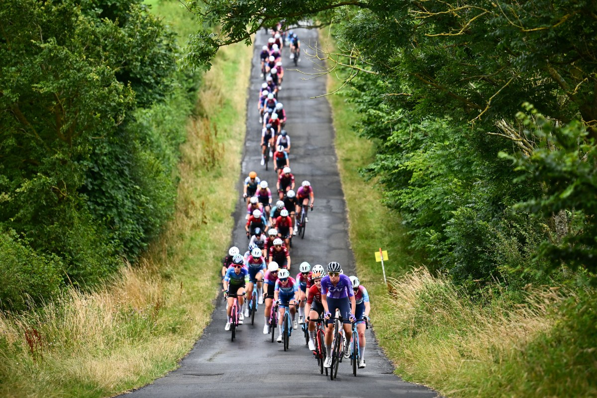

02 — The story
The comeback
One comeback season to a National A win
Nicola Quaye is a 20-year-old Manx rider who, in her own words, "always got good results, but could never be bothered to do the training." So at the end of sixth form she took a full-time job as a nail technician and stepped away from the sport.
In August last year she got the itch again, went out for one ride, and got hooked. She started training that autumn — completely self-coached, adapting everything to fit herself, driven by the data and her own improvement.
Less than a year later, in her comeback season, she soloed away on the first lap of the 75-mile Curlew Cup and stayed away to take a remarkable maiden National A victory, adding the Queen of the Ryals climbing prize for good measure.
"I started riding again in August last year, and training from around October. But I've never had a coach. I've done it all myself."
— Nicola Quaye, Cycling Weekly

Curlew Cup, Northumberland · National Road Series